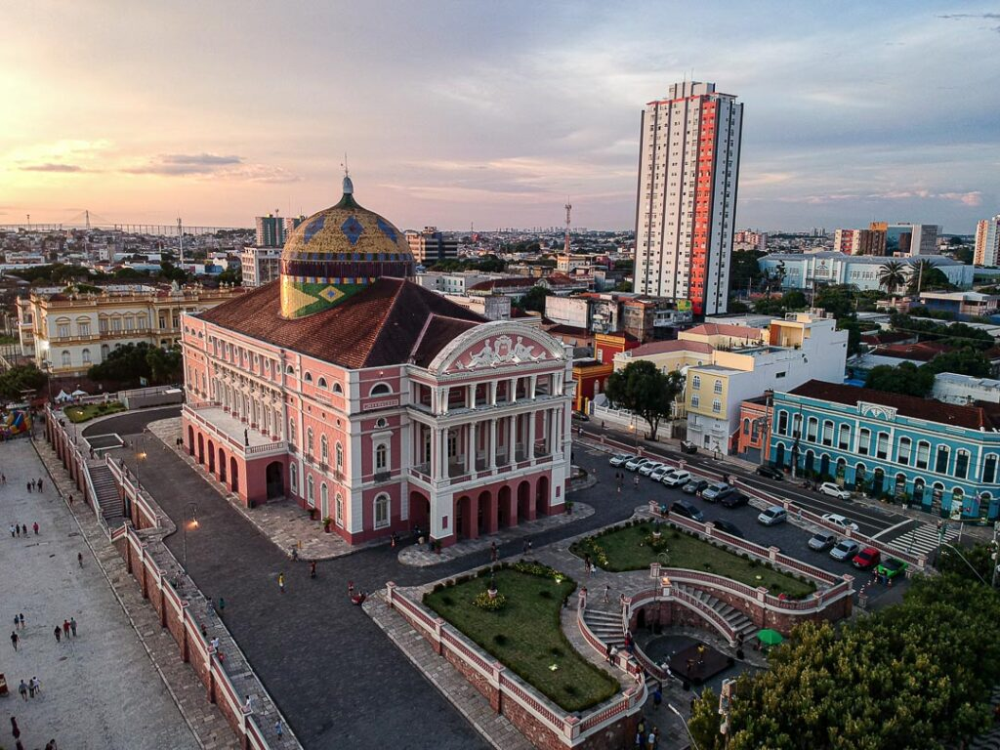

Tabela de Destinos
| Destinos | Tempo de Vôo | Melhor Epoca | Pontos Turisticos |
|---|---|---|---|
| SP-(Rio de Janeiro)RJ | 1 hora e 30 minutos | Verão | Copacabana, Cristo Redentor |
| SP-(Manaus)AM | 4 horas | Inverno | Teatro Amazonas |
| SP-(Salvador)BA | 2 horas e meia | Verão | Carnaval |
Cartões Postais
Rio de Janeiro
Não é novidade para ninguém que o Rio de Janeiro é cheio de paisagens paradisíacas, além das belas praias, a cidade maravilhosa também conta com belíssimos parques e reservas de matas atlânticas, onde é possível realizar trilhas, se banhar em quedas de cachoeiras e relaxar junto à natureza.

Manaus
O turismo no município de Manaus oferece diversas atrações culturais, gastronômicas e naturais. Fundada em 1669, a capital amazonense é mundialmente conhecida, o que a tornou um dos maiores destinos turísticos do Brasil. A cidade oferece uma ampla rede hoteleira, incluindo hotéis de selva em sua região metropolitana.
Salvador
O Carnaval de Salvador é uma festa popular que já ganhou até lugar no Guinness Book como o maior Carnaval de rua do mundo. A festa é dividida por sete circuitos com shows e desfiles de blocos carnavalescos, como também há espaço para bailinhos, música eletrônica, palco do rock.

Belo Horizonte
Belo Horizonte é a capital do estado de Minas Gerais, localizado na Região Sudeste do Brasil. A cidade foi fundada em 12 de dezembro de 1897, após um período de quatro anos sendo construída. Trata-se de uma cidade planejada. É caracterizada pelo clima tropical de altitude e pelo relevo composto por serras e morros.
Natal
Natal é a capital do estado de Rio Grande do Norte, na extremidade nordeste do Brasil. É conhecida pelas extensas dunas de areia costeiras e pelo Forte dos Reis Magos, em forma de estrela, uma fortaleza portuguesa do século XVI na foz do rio Potengi. A norte do rio, Genipabu é uma área de enormes dunas com uma lagoa de água doce. A autoestrada Via Costeira liga uma faixa de 15 km de praias a sul do forte.